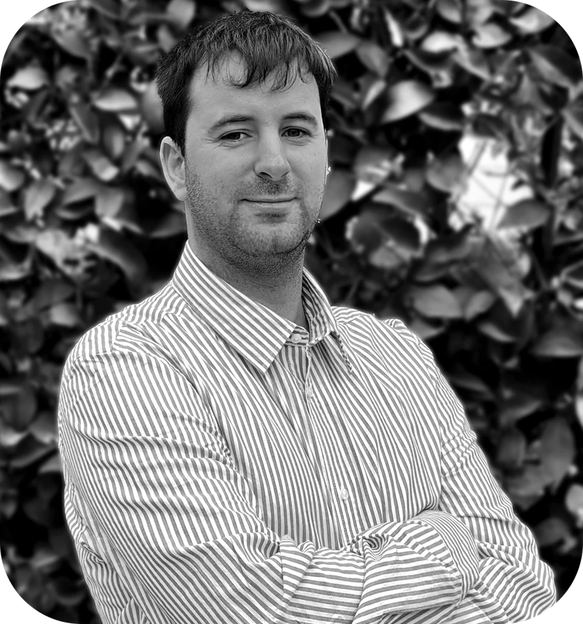

Ejecutar y operar proyectos agrícolas sostenibles bajo estándares productivos y criterios ESG, garantizando alimentos sanos y trazables a nuestros consumidores en los mercados mundiales.
Contribuir al desarrollo agroexportador junto con aliados estratégicos mediante prácticas modernas, tecnológicas y sostenibles que generen resultados económicos en armonía y respeto con el entorno.


